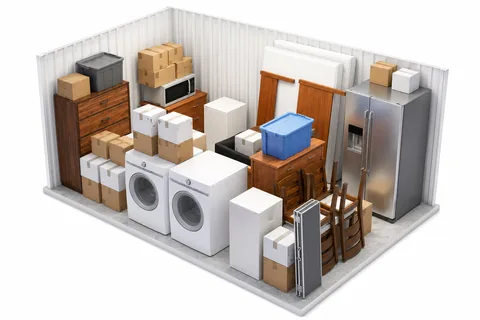

Why Self Storage Makes Moving Easier
A step-by-step way to use a storage unit before, during and after a move.
A storage unit helps a move in three specific ways: it empties the house you are selling, it holds everything when the closing dates leave a gap, and it lets you move in stages without a one-day scramble. This is the practical version: which size to rent for which house, what it costs at our Hutchinson and South Hutchinson locations, and the order to load in so you are not digging for the coffee maker.
Step 1: Decide What the Unit Is For
Staging a home for sale
Rent the unit before the listing photos are taken. Clear out off-season clothes, spare furniture, garage overflow, toys and anything stacked along a wall. Closets and garages show better when they are half empty. You are also packing early, so moving week gets shorter. A 5×10 or 10×10 is usually enough for this stage.
Covering a closing-date gap
When you have to be out of one house before you can get into the next, the whole household goes into storage. Size the unit for the full house, not for what you think you can squeeze in, because you will be loading it with a truck on a deadline.
Moving in stages or downsizing
If the new place is smaller, move in what you know fits and store the rest. Decide about the extra bedroom set after you have lived in the new rooms for a month, not on moving day.
Step 2: Match the Unit to the House
All units at both locations are drive-up, ground level, with roll-up doors. Regular monthly rates at the time of writing:
- 5×10, a walk-in closet’s worth of staging overflow: $65 Hutchinson, $55 South Hutchinson.
- 8×10, a studio apartment: $85, Hutchinson only.
- 10×10, a one-bedroom apartment with sofa, dining set, bed, washer and dryer: $95 Hutchinson, $65 South Hutchinson.
- 10×15, a two-bedroom apartment: $105 Hutchinson, $75 South Hutchinson.
- 10×20, a two to three-bedroom house: $125 Hutchinson, $105 South Hutchinson.
- 10×25, a three-bedroom house: $145, Hutchinson only.
- 10×30, a house with four or more bedrooms: $155, Hutchinson only.
- 15×30, a full house plus a boat or large vehicle: $190, South Hutchinson only.

As a worked example, a two-month gap with a three-bedroom house in a 10×20 comes to $250 in Hutchinson or $210 in South Hutchinson. Prices can change, so confirm current rates, and use the size guide or our post on choosing the right unit size if you are between two sizes. When in doubt, go one size up. A unit packed to the door is one you cannot get anything out of.
Step 3: Rent Before the Truck Is Loaded
The Hutchinson location is at 2511 E 17th Ave and the South Hutchinson location is at 712 N Walnut St, on the other side of the Arkansas River. Choose the one nearer the house you are moving into, since that is the trip you will make most often.
You can rent online for Hutchinson or South Hutchinson: pick the unit, sign the lease, pay by card, Cash App or ACH, and you get access right away. A lock comes free with the rental. Do this a few days ahead so moving day starts with a place to go.
Step 4: Load in the Order You Will Unload
- Back wall first: the things you will want last. Holiday boxes, books, keepsakes, the guest bed.
- Appliances next, along one side. Clean and dry them, and leave refrigerator and washer doors propped open.
- Large furniture in the middle. Stand sofas and mattresses on end where the frame allows, take legs off tables, and tape hardware in a bag to the piece it belongs to.
- Boxes on top and in the gaps, heavy at the bottom, labels facing the aisle.
- A walkway down the center. It costs a little floor space and saves unloading half the unit to reach one box.
- By the door: the first-night kit. Bedding, towels, a few pans, the coffee maker, tools, the router, kids’ school things.
Number the boxes and keep a list on your phone of what is in each one. It takes ten minutes while you pack and saves an afternoon later.
Step 5: Pack for an Insulated Unit, Not a Climate-Controlled One
Our units are insulated, and neither location has climate control. For a move that lasts weeks or a few months, ordinary household goods cope well if you pack with Kansas heat and humidity in mind:
- Set furniture and boxes on pallets or boards, off the concrete.
- Cover wood and upholstery with cotton sheets or moving blankets, not sealed plastic that traps moisture.
- Leave a small gap between your things and the walls so air can move.
- Keep candles, vinyl records, photo albums and electronics with you in the house or the car.
Cash, documents, jewelry and firearms should not go in a unit at all. They are also excluded from the optional tenant protection plan, which covers $2,000, $3,000 or $5,000 of stored property against things like burglary, fire and water damage, but not flood.
Step 6: Empty It and Give Notice
Rentals are month-to-month with no long-term contract. Once you have a move-in date for the new house, plan the unload for before the end of that month and give notice before the month ends, so you are not paying for a unit you have already emptied. If you are relocating from out of town, our guide to moving to Hutchinson covers the highways, the two sides of the river and when to schedule the truck.
Frequently Asked Questions
What size storage unit do I need to hold a three-bedroom house during a move?
A 10×20 holds a two to three-bedroom house, and a 10×25 gives a three-bedroom house extra room. At the time of writing a 10×20 is $125 a month at our Hutchinson location and $105 in South Hutchinson. If you are between sizes, choose the larger one so you can leave a walkway.
Should I rent a storage unit before I list my house for sale?
Yes, if the house is full. Moving spare furniture, off-season clothes and garage overflow into a 5×10 or 10×10 before the listing photos makes rooms and closets look larger, and it means part of your packing is already done.
How long can I keep a storage unit between selling one house and closing on another?
As long as you need. Rentals at Reno County Storage are month-to-month with no long-term contract, so a gap of three weeks or three months works the same way. Give notice before the end of the month when you are ready to move out.
Can I back a moving truck up to the door of a storage unit?
Yes. Every unit at both Reno County Storage locations is drive-up and ground level with a roll-up door, so you load straight from the truck into the unit with no stairs, elevators or hallways.
Are my belongings covered while they are in a storage unit during a move?
Only if you arrange it. An optional tenant protection plan, administered by SafeLease, offers $2,000, $3,000 or $5,000 of coverage with a $100 deductible per claim. It does not cover flood, and your homeowners or renters policy may already cover property stored off premises, so check that first.
If you want help choosing a size for your move, call or text (620) 662-7336. You can also read the storage FAQ or see both locations and current rates. Reno County Storage gives a 15% discount to active duty military, veterans and first responders.